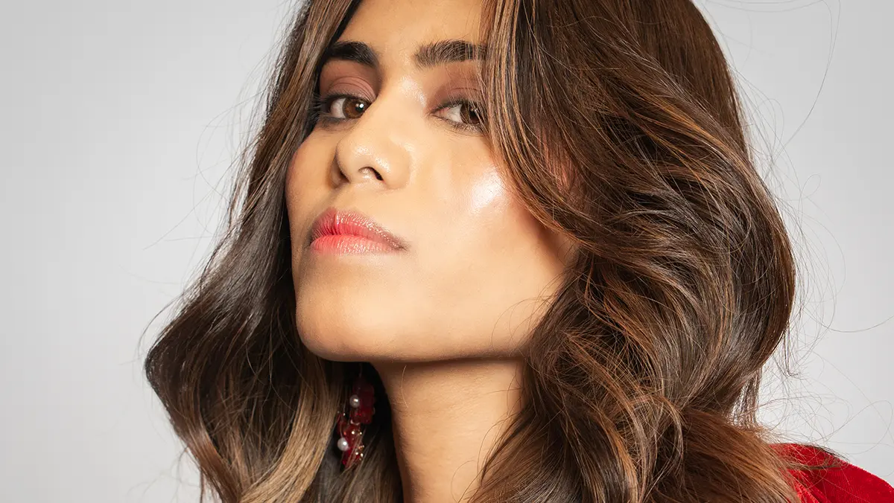

Achieving a perfect hairstyle is something many people aim for daily. With easy access to hair styling tools like straighteners, curlers, and dryers, it has become convenient to style hair at home. However, the results often don’t match the finish of professional salon styling.
This raises an important question—should you rely on home styling tools or choose salon styling? Understanding the difference between the two can help you decide what works best for your needs, hair type, and lifestyle.
Hair styling tools are devices used at home to style your hair, such as straighteners, curling irons, and blow dryers.
Salon styling, on the other hand, involves professional techniques performed by trained stylists using advanced tools and products.
Both methods aim to improve your hairstyle but differ in quality, technique, and results.
People often choose between the two based on:
These factors influence the final decision.
You may need salon styling if:
These signs indicate limitations of home styling.
Home styling tools require proper technique and experience. Without it, results can be inconsistent and may damage hair over time.
It matters because:
Choosing the right method improves both appearance and hair health.
Here’s a comparison to help you decide:
A combination of both can work best for most people.
This comparison is useful for:
It helps you make a practical choice.
Depending on your choice, you can achieve:
Both have their own advantages.
To get the best results:
Balance is the key to healthy styling.
Hair styling tools and salon styling both have their place in your routine. While home tools offer convenience, professional salon styling delivers superior results and finish.
Choose based on your needs, but don’t hesitate to rely on experts when you want your hair to look its absolute best.